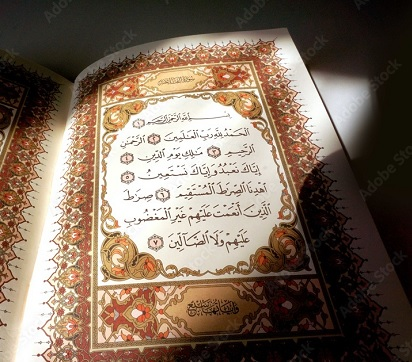

“The Book of Allah”
All praise is due to Allah, the One Who only deserves all kinds of praise; I bear witness that there is no god worthy of worship but Allah, the One besides Whom there is no other Lord, and to Whom only we offer our worship; I bear witness that Muhammad is His Prophet and chosen Messenger; may Allah’s Peace and Blessings be him, his family, companions and whoever follows his guidance.
It is authentically reported that the Messenger of Allah, sallallaahu `alayhi wa sallam ( may Allah exalt his mention ) said,
"I have left two matters with you. As long as you hold to them, you will not go the wrong way. They are the Book of Allah and the Sunnah of His Prophet."
[Malik, Al-Muwatta’] Commenting on this Hadeeth, Ibn ʿAbd Al-Barr, may Allah have mercy upon him said: "This is a well-recorded, popular report on the authority of the Prophet ( sallallaahu `alayhi wa sallam ( may Allah exalt his mention )) to the extent that scholars believe its popularity makes them pay no much attention to its chain of transmission." (At-Tamheed: 24/331)